Ausbildung und Beritt
Ausbildung von Pferd und Reiter
Ausbildung und Beritt ist Vertrauenssache!
Die schonende und solide Grundausbildung Ihres Youngsters, sowie die gefühlvolle Weiterbildung Ihres Pferdes, stehen für mich an erster Stelle. Grundsätzlich ist eine solide Ausbildung nicht nur für das Pferd sondern auch für jeden Reiter sehr wichtig. Es ist nicht von Bedeutung, ob es sich um einen Freizeitreiter oder einen ambitionierten Turnierreiter handelt, sondern es ist die Harmonie, die zwischen Pferd und Reiter stimmen sollte. Dies möchte ich fördern und Ihre individuellen Ziele mit Ihnen erreichen.
Ich biete für Pferd und Reiter eine individuelle Aus- und Weiterbildung im Springen bis zur Klasse S, wobei ich stets pferdegerecht mit den mir anvertrauten Tieren umgehe, sie ihrem Talent entsprechend fördern und nicht überfordere.
Sie haben die Wahl zwischen Vollberitt, Teilberitt, Einzelunterricht in Dressur und Springen sowie Gruppenunterricht - auch für Fremdreiter. Darüber hinaus bereite ich Ihre Jungpferde gerne auf die Stutenleistungsprüfung vor.
Mein Werdegang: 2002 Pferdewirtschaftsmeisterin FN im Fachbereich Zucht und Haltung; 2004 Pferdewirtschaftsmeisterin FN Fachbereich Reiten; Siegreich in Springen der Klasse S; Teilnehmerin an Deutschen Meisterschaften der Damen; Teilnehmerin an Landesmeisterschaften; Teilnehmerin am Amazonen Derby in Hamburg Klein Flottbek; mehrfach qualifiziert für das Bundeschampionat des Deutschen Springpferdes in Warendorf; zahlreiche Siege und Platzierungen von Springpferde A* bis S**.
Des Weiteren konnte ich durch mehrwöchige Trainingsaufenthalte unter anderem bei Peter Luther, Heinrich-Wilhelm Johannsmann (Kaiser) und Werner Peters meine Fähigkeiten und Kenntnisse erweitern!
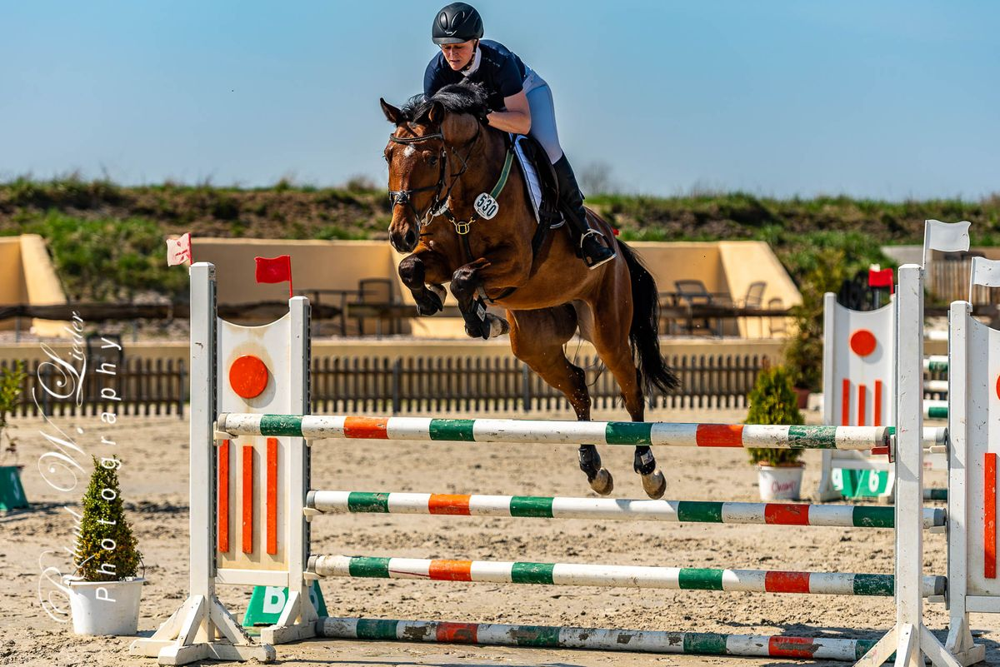
Unterricht für jeden Anspruch
REITSCHULE
Unsere Reitschule bietet Unterricht für jeden Anspruch! Bereits Kindern ab 3 Jahren vermitteln wir spielerisch alles Wichtige rund ums Pony und den Einstieg in den Reitsport. Kinder, Jugendliche und Erwachsene fördern wir individuell nach ihren Stärken auf unseren gut ausgebildeten Schulpferden und Ponys. Als Reitlehrerin FN stehe ich für qualifizierten Reitunterricht. Stetige Fort- und Weiterbildungen spiegeln sich in meinem Unterricht wieder. Meine Reitschüler können ebenfalls schon beachtliche sportliche Erfolge bis Klasse M** vorweisen.
" Zusammenkunft ist ein Anfang. Zusammenhalt ist ein Fortschritt. Zusammenarbeit ist der Erfolg!" (Henry Ford)
Unser Angebot: Erwachsene: Einzel- und Gruppenunterricht auf unseren gut ausgebildeten Pferden. Kinder ab 3 Jahren: Einzel- und Gruppenunterricht für Anfänger und Fortgeschrittene auf gut ausgebildeten Ponys. Jugendliche: Einzel- und Gruppenunterricht für Anfänger und Fortgeschrittene auf gut ausgebildeten Ponys und Pferden.
Des weiteren bieten wir bei entsprechenden Kenntnissen und Können Stangen- und Springstunden an. Ausritte bei gutem Wetter werden ebenfalls angeboten!
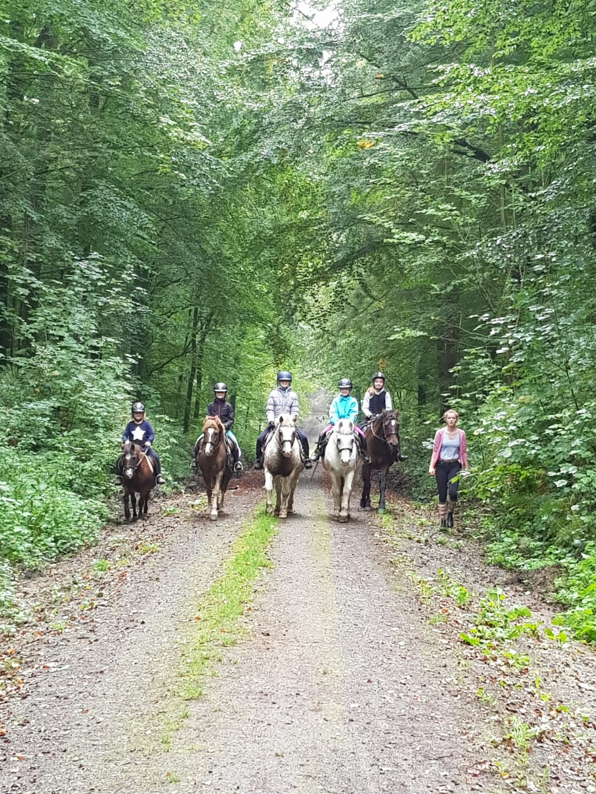
Ferienprogramm rund ums Pferd
Kinderferienspaß
Regelmäßig in den schleswig-holsteinischen Schulferien bieten wir ein abwechslungsreiches Ferienprogramm an. Von Montags bis Freitags betreuen wir Ihre Kinder in der Zeit von 9 -16 Uhr mit einem spannenden Programm rund ums Pferd. Tägliches Reiten, Putzen, Spielen, Basteln usw. stehen auf dem Programm. Ein gemeinsames leckeres und gesundes Mittagessen ist inklusive. Außerdem steht für die Kinder Mineralwasser und Apfelschorle zur freien Verfügung bereit. Die Termine werden zeitnah hier bekannt gegeben. Bei offenen Fragen können Sie mich jederzeit kontaktieren.
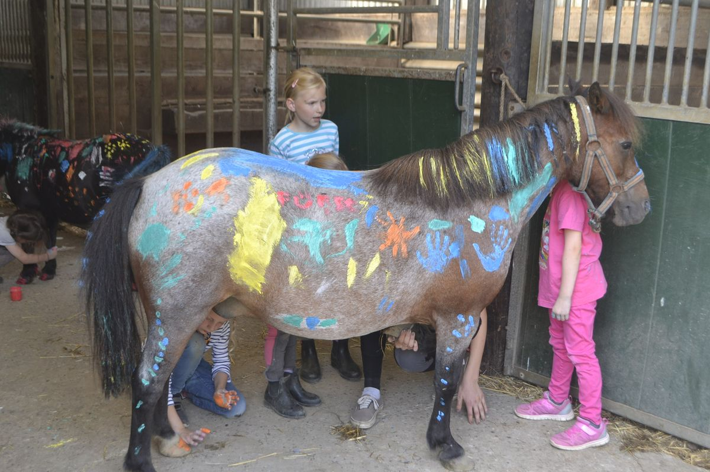
Wohl des Pferdes an erster Stelle
PENSION
Bei uns steht das Wohl des Pferdes an erster Stelle!
Wir bieten einen kompetenten Service in entspannter Atmosphäre rund um das Pferd. Zwei Außenreitplätze sowie eine Reithalle stehen Ihnen für die tägliche Arbeit zur Verfügung. Unser traumhaftes Ausreitgelände schließt sich direkt an unsere großzügigen Koppeln an. Das gemütliche Reiterstübchen mit Terrasse lädt zum verweilen und zum gemütlichen Beisammensein ein. Sie haben die Wahl zwischen Innen- & Außenboxen, In den Sommermonaten besteht die Möglichkeit ihr Pferd 24/7 auf unseren Weiden zu lassen. Im Winter stehen für den täglichen Auslauf mehrere Sandpaddocks zur Verfügung.
Hier ein tolles Video über meine Anlage und die Örtlichkeiten:
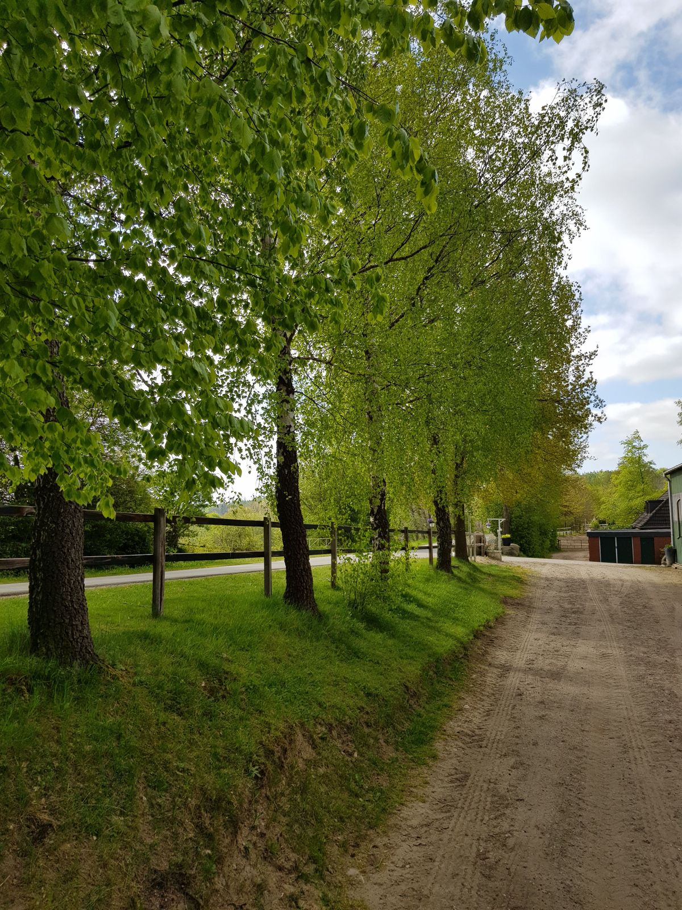
Holsteiner Zucht & Deutsche Reitponys
Zucht
Wie alles begann...
Mit unserer Stammstute Alexa von Ahorn Z x Rubens x Mabuse begann unsere kleine aber feine Holsteiner Zucht. Der Stamm 6407 ist unser Hauptstamm, den wir jetzt in der 5.Generation führen. Des Weiteren sind die Stämme 621 ( Maya 2 von Corrado II x Ahorn Z x Cicero und Emmy Lou R von Chin Champ X Corrado II x Ahorn Z ) und 5953 ( Veela von Corrado I x Sir Shostakovich xx x Ronald) bei uns beheimatet. Darüber hinaus züchten wir auch erfolgreich Deutsche Reitponys ( Dorina von Dakar x Nobel und Helena N von Hondsdrug Don Gregory x Titus, sowie mit Dejavue von Hattrick). Auch unsere Dolce Vita R von Proud Rafaello a.d. Dorina von Dakar (selbst Staatsprämienstute) ist nach ihrer Sportlaufbahn in die Zucht gegangen. Unsere Zuchtstuten sind leistungsgeprüft und verfügen über sportliche Erfolge.
Mochito R von Mylord Manolito NRW a.d. Dolce Vita R von Proud Rafaello. Goldstück R, jetzt 4 jährig von Double Cream x Rocketti ist nicht nur ein "HIngucker", sondern besticht durch ihre Rittigkeit und Einstellung! Unsere beiden Wallache aus *2021, Double Qu R von Dubliner x Corrado I und Clou de la vie von Corfu de la vie x Chin Champ, begeistern uns täglich.
Fohlenjahrgang 2023: Ramina R von Madness a.d. Justicia R von Toulon x Cristo x Corrado I; Roulette R von Corfu de la vie a.d. Emmy Lou R von Chin Champ x Corrado II x Ahorn Z; Dark Chocolate R von Proud Rocketti a.d. Dejavue von Hattrick; Don Pappa R von Del Piero a.d Helena von Hondsdrug Don Gregory.
Fohlenjahrgang 2022: Holsteiner Stutfohlen von Keaton x Corrado I; Holsteiner Hengstfohlen von Corfu de la vie x Chin Champ (For sale); Holsteiner Hengstfohlen von Daikon x Toulon (For sale); Deutsches Reitpony Stutfohlen von Double Cream x Rocketti; Holsteiner Hengstfohlen von Clarimo x Corrado I; Holsteiner Stutfohlen von Daikon x Cristo.
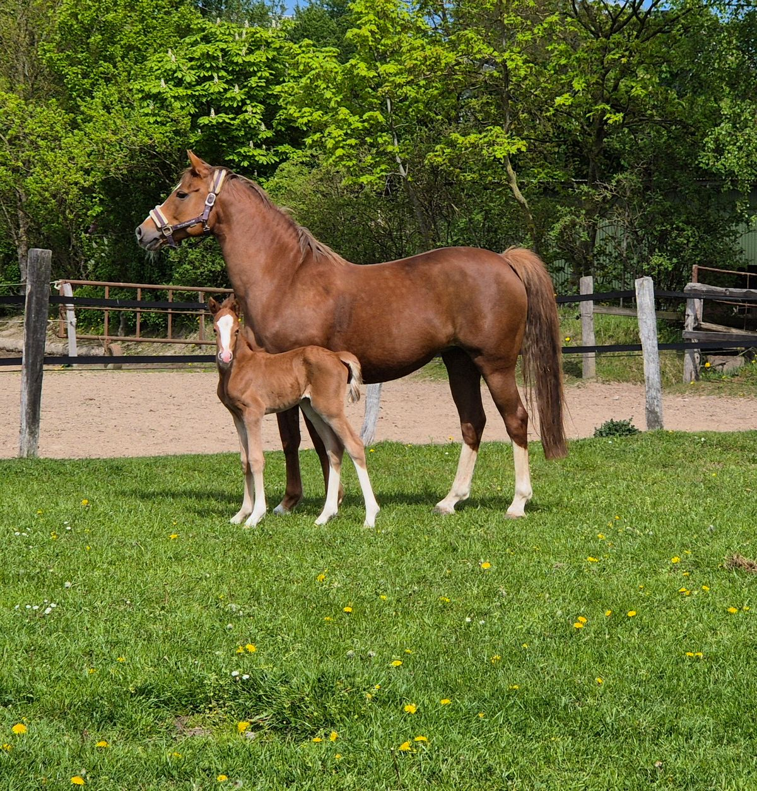
Verkaufspferde und -ponys
Verkauf
Wir haben immer einige interessante Verkaufspferde/-ponys aus eigener Zucht im Angebot.
Bei Interesse setzten Sie sich bitte telefonisch mit mir in Verbindung!
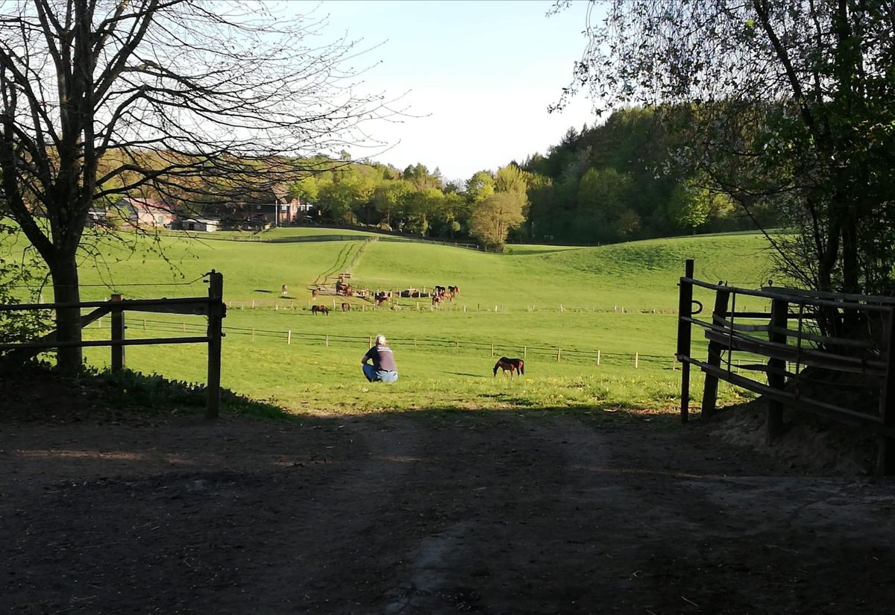
Neuigkeiten & Impressionen
Aktuelles
Impressionen 2026
Abendstimmung, Osterfeuer, Dressurlehrgang, Floki, Entspannung, Ahlmann Masters.
Wir haben uns von dem RuFv Birkengrund - Schönhorst e.V. für das große Finale der besten 5 Mannschaften im Februar bei den VR Classics 2026 qualifiziert! Röschmann Team Trophy. gemeinsamer Turniertag, unser Smiley Pferd, Schimmelliebe. Stall- Feeling :-). unser Smiley im Stall. Schimmelpower.
Springlehrgang 2024: 18 motivierte Teilnehmer... ersten Tag Stangenarbeit mit Kringel und Kreisen, 2. Tag Parcoursspringen. Alle hatten viel Spaß und starten jetzt motiviert in die Saison.
VR Classics in den Holstenhallen Nms 2024. Finale Mannschaftsspringen der Reitsport Sievers Trophy. Das letzte Quäntchen Glück fehlte uns heute. Vielen Dank an Reitsport.Sievers für die Ausrichtung dieser Prüfung! Wir, als Verein RuFV Birkengrund.Schoenhorst, freuen uns sehr an diesem Finale teilgenommen haben zu können. Und starten motiviert in die neue Mannschaftssaison.
Reitabzeichen 2023 🌞 RA5 und PFU 🐎. Tolles Wetter, gute Laune und etwas Aufregung 😁. Alle bestanden und alle glücklich.👍🎉
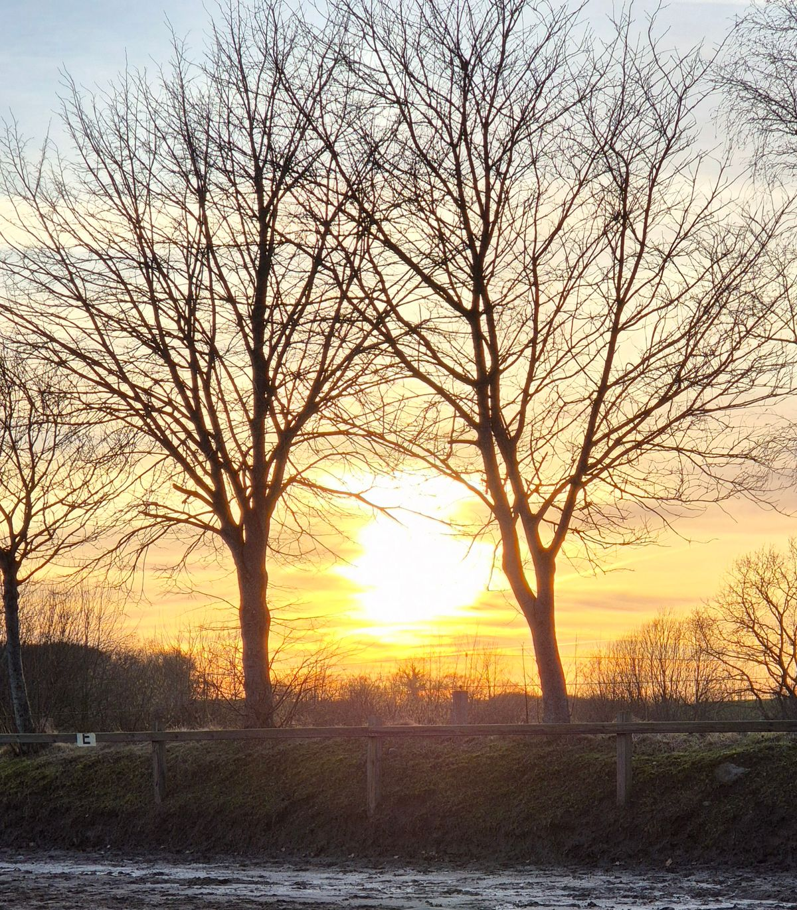
Bilder, Teams & Stallmomente
Galerie
Double Qu R und Clou de la vie R
Spannung, Spaß und Teamfeeling 2025: IMG-20250525-WA0011, Prüfung beobachten, Chillen, Ruhemodus, Entspannung zw. den Prüfungen, Team, Großeltern mit der Enkelin, Team im Sonnenschein, bester Floki, Vorbereitung, Freude beim Einreiten, Röschmann Team Trophy.
Weitere Eindrücke: Neele & Cheker, Frühling 2023, Klein Marie im Apfelgarten, Ramina R, Goldstück R, Floki, Roulette R, Linea R, bisheriges 8er Team 2022, Turniere 2022, Herbstferienlehrgang, Moritz, Justicia R, Weihnachtsstimmung, GALERIE.
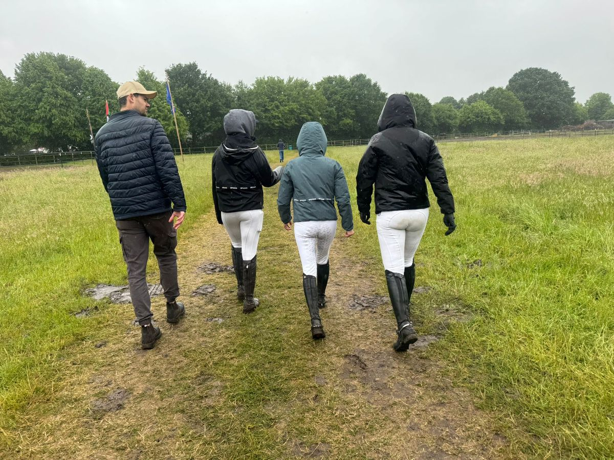
Bilddateien
Mitgelieferte Bilder
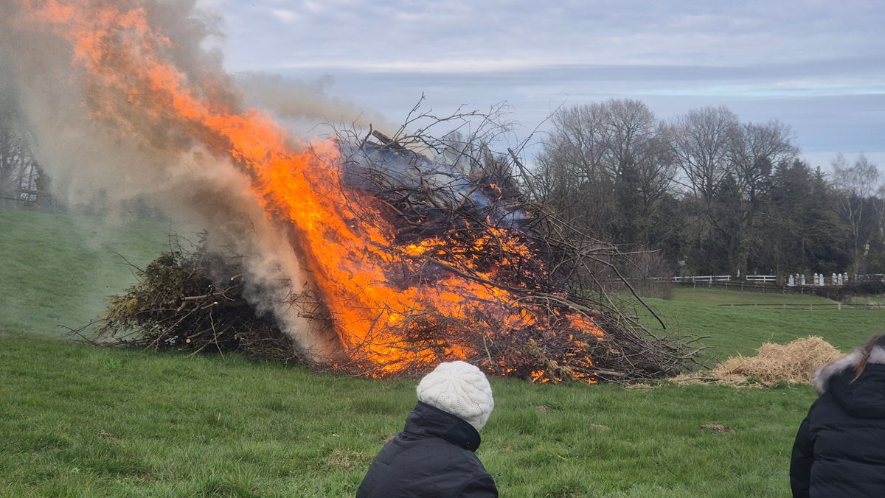
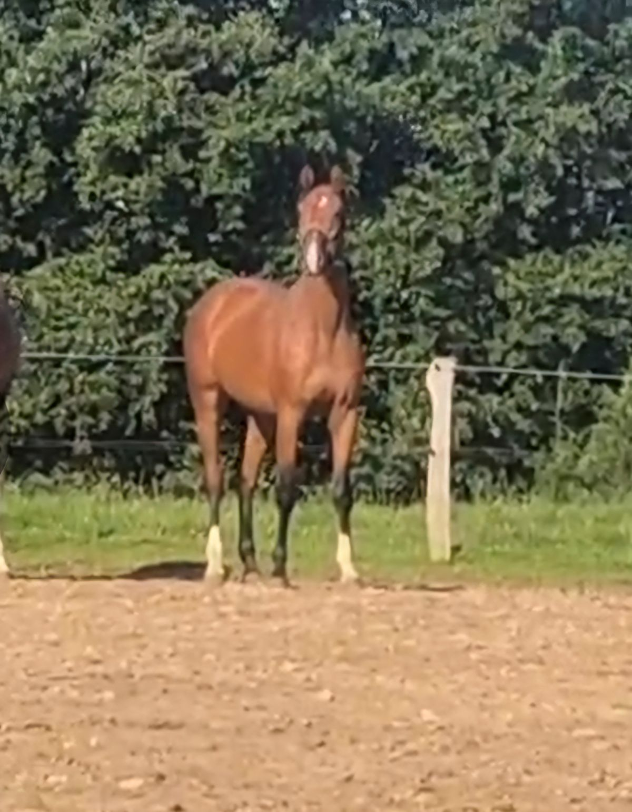
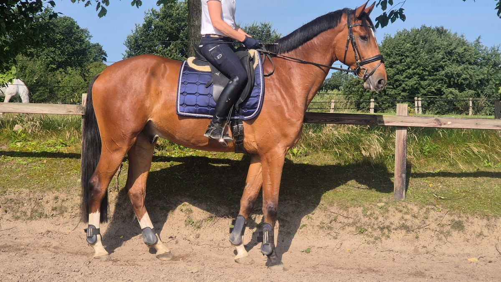
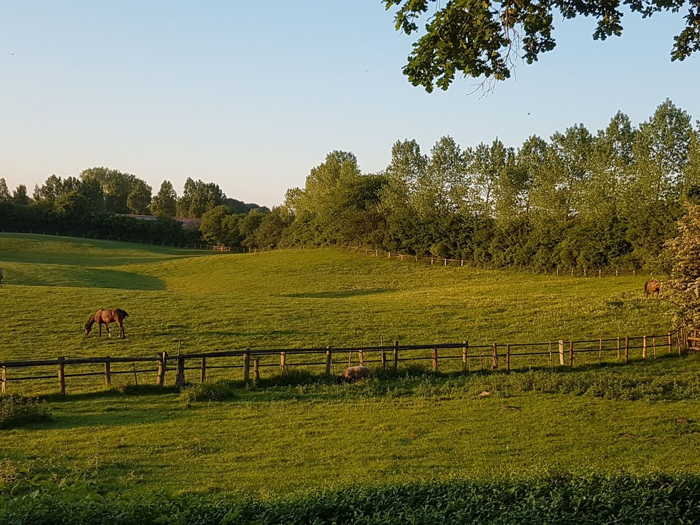
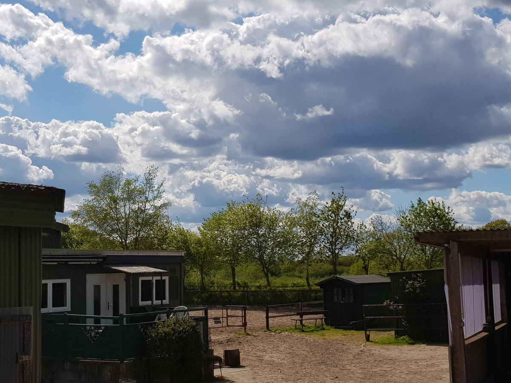
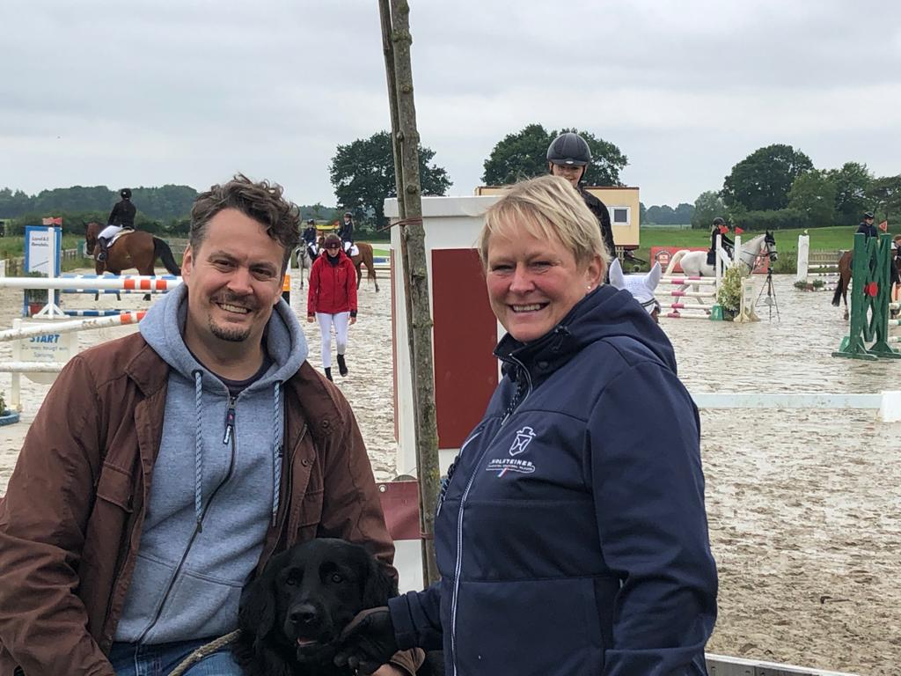
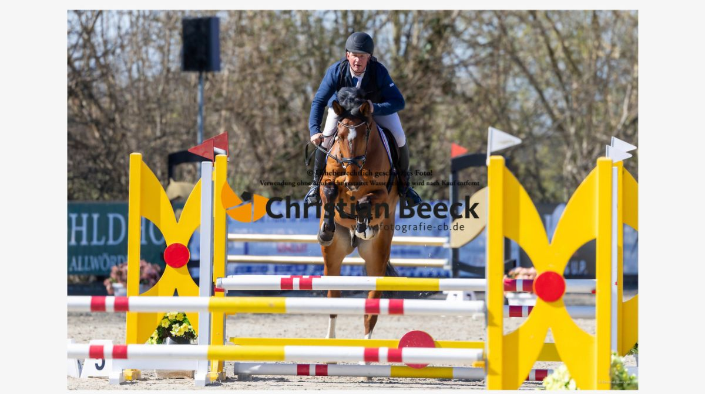
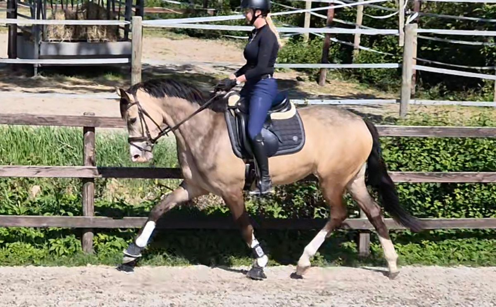
Adresse, Kontakt & Datenschutz
Impressum
Adresse: Inke Reimer, Bisseer Weg 24, 24220 Schönhorst. Mobil: +49 (0) 176 21807972. info@guter-reitstall.de. Sitz des Amtsgerichtes: Rendsburg.
Mit Urteil vom 12. Mai 1998 - Az. 312 O 85/98 - Haftung für Links; hat das Landgericht (LG) Hamburg entschieden, dass man durch die Erstellung eines Links, die Inhalte der gelinkten Seite ggf. mit zu verantworten hat. Dies kann - so das Gericht - nur dadurch verhindert werden, dass man sich ausdrücklich von diesen Inhalten distanziert. Da guter-reitstall.de keinerlei Einfluss auf die Gestaltung und die Inhalte der gelinkten Seiten hat, distanziere ich mich ausdrücklich von den Inhalten aller Seiten, die sich nicht auf diesem Server befinden oder über die Suchabfragen gefunden werden können!
Datenschutzerklärung: Im folgenden informiere ich darüber, welche Daten von den Nutzern meiner Webseite erhoben werden. Die Nutzung meiner Webseite ist in erster Linie für jeden ohne die Angabe von personenbezogenen Daten möglich.
Server-Log-Files: IP-Adresse, Web-Browser und -version, Datum und Uhrzeit der Serveranfrage, Anzahl der abgerufenen Dateien, Provider. Die aufgeführten Informationen werden keinen bestimmten Personen zugeordnet und nach maximal sieben Tagen gelöscht. Sie dienen lediglich der Erkennung und Abwehr von Angriffen.
Erhebung und Nutzung von Daten: Sollten Sie mich per Mail, per Post oder per Telefon kontaktieren, habe ausschließlich ich Zugriff auf die von Ihnen übermittelten Daten. Diese Daten werden nur zur Bearbeitung Ihres Anliegens verwendet und nicht langfristig gespeichert oder an Dritte übermittelt.
Cookies: Meine Webseite verwendet Cookies (kleine Textdateien), um einige Funktionen zu ermöglichen. Einige Cookies werden auf Ihrem Endgerät gespeichert. Sie richten keinen Schaden an. Sie ermöglichen lediglich eine Nutzerfreundliche Nutzung meiner Webseite. Andere sogenannte Session Cookies werden direkt beim Schließen des Browsers gelöscht.
Facebook: Auf meiner Webseite verwende ich das Social Plugin des sozialen Netzwerkes facebook.com (Facebook Inc. / USA - im weiteren Anbieter). Durch die Nutzung meiner Webseite wird eine Verbindung zwischen Ihrem Browser und dem Server des Anbieters hergestellt.
Kontakt bei Fragen zu meinen Datenschutzhinweisen: Handy: 0176-21807972. info@guter-reitstall.de. Verantwortlich für den Inhalt: Inke Reimer.